Writing
저서
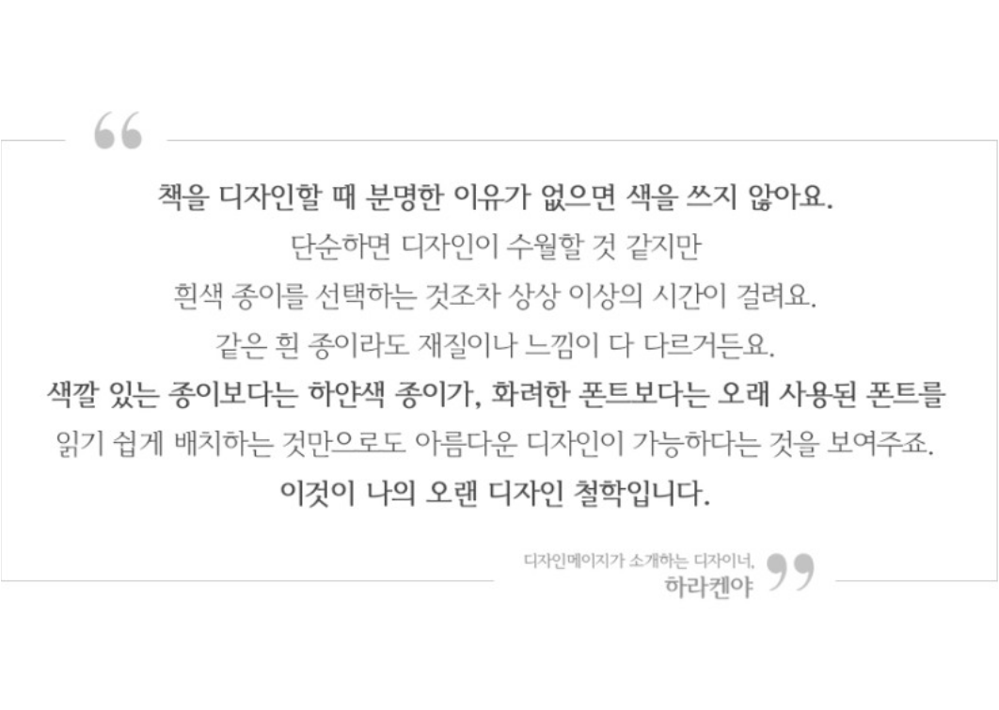
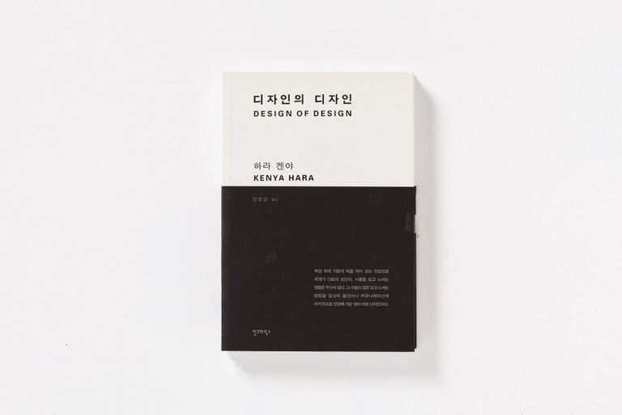
디자인의 디자인
저자 하라켄야
출판 안그라픽스
발행 2007.02.27
일상의 커뮤니케이션에 의식적으로 반영해 가는 것이 바로 디자인!
디자인이라는 행위를 언어로 디자인한 『디자인의 디자인』. 폭넓은 영역에서 활약해 온 디자이너 하
라 켄야가 '디자인이란 무엇인가'라는 물음에 대해 자신이 관여한 여러 프로젝트를 돌아보며 나름의
답을 제시한 책이다. 지금 잠시 멈춰 미지의 일상과 만나자는 그의 제안에는 종래의 디자인관을 새롭
게 보는 발상의 전환이 담겨 있다.
이 책은 디자인 관계자뿐만 아니라 일반 사람들도 읽을 수 있도록 구성하였다. 저자는 디자인을 말이
나 글로 설명하는 것이야말로 또 하나의 디자인임을 알았다고 말한다. 먼저 디자인 개념의 발생으로
부터 오늘날에 이르기까지의 흐름 속에서 또 다른 전망을 확인하고 있다. 또한 시대의 변화와 더불어
디자인을 세상의 적정한 장소에 재배치해 나갈 필요가 있는 디자인의 현재에 하나의 토대를 제공한
다.
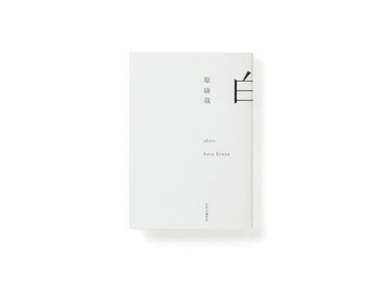
백
저자 하라켄야
출판 안그라픽스
발행 2009.05.29
"세계 속의 도시는 지금 온갖 표현과 문화가 뒤섞인 끝에 '회색'으로 균질화되었다. 하지만 나는 그 소
용돌이에 휩쓸리지 않고 본연의 가치를 보존하기 위한 방법이 무엇인지 생각하고자 한다." 이 말에
호응이라도 하듯 하라 켄야는 디자인과의 일상의 격투 속에서 '백'을 찾아냈다.
'백'이라는 색채가 지닌 본질의 힘을 최대한 끌어냄으로써 서로 뒤섞여 흐려진 회색 속에서 '백'은 부
각된다. 자신만의 본연의 '백'을 만들어내기 위한 하라 켄야의 디자인 모색은 계속된다. 이 책에서 말
하는 '백'은 결코 색채에 관한 이야기가 아니다. 그것은 우리 문화 속에 존재하는 감각의 자원을 밝혀
내는 시도이다. 즉, 간결함과 섬세함을 낳는 미의식의 원점을 백이라는 개념을 바탕으로 찾아보는 것
이다.
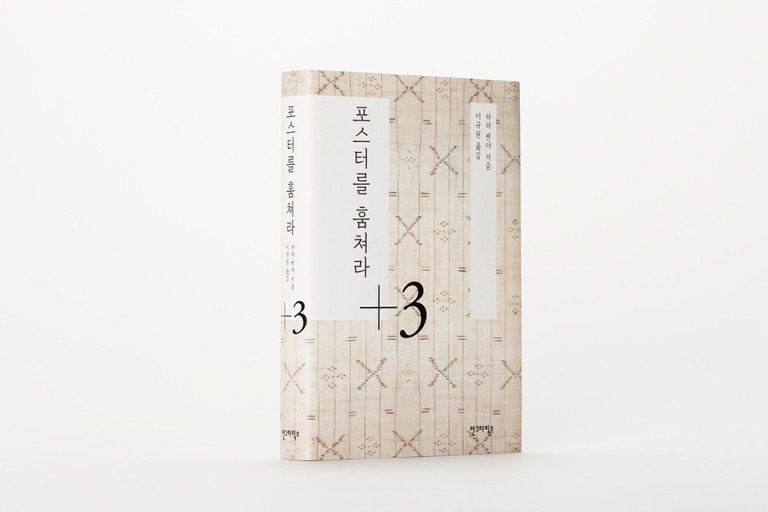
포스터를 훔쳐라
저자 하라켄야
출판 안그라픽스
발행 2010.11.01
15년이라는 세월을 디자이너로서 정신없이 살아온 하라 켄야의 초심부터 현재까지!
2002년부터 무인양품 아트디렉션을 해온 그래픽디자이너이자 무사시노미술대학 교수, 하라 켄야. 사
물의 모습과 인간의 살림에 대한 깊은 통찰어린 디자인을 해온 그가 1995년 출판된 수필집 에 요즘
일상에서 겪는 일을 소재로 한 수필 세 꼭지를 더해 새롭게 선보인다. 는 1991년부터 4년 동안 소설신초에 연재된 50개 꼭지를 연재 순서대로 수록한 것이다. 신출내기 시절 디자인과 격투한 나날, 하라 켄야의 원점이라고 할 수 있는 작업들을 주로 만날 수 있는데, 여기에 +3을 더해 묵은 수필과 현재를 연결시켜 새로운 맛으로 살려내고 있다.
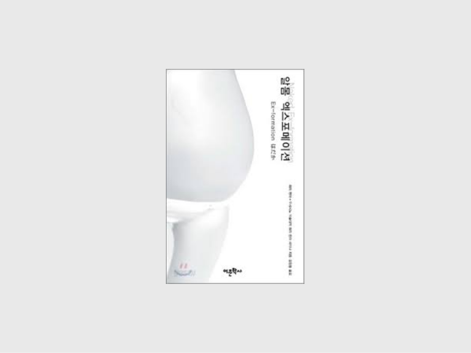
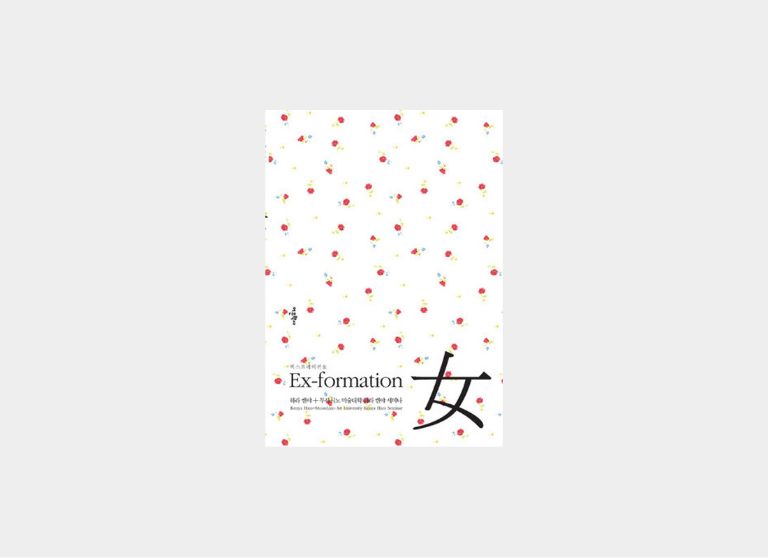
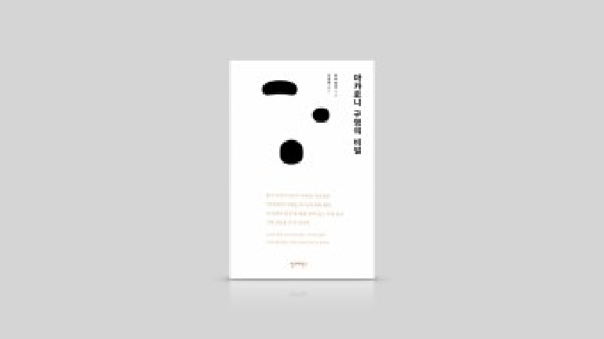
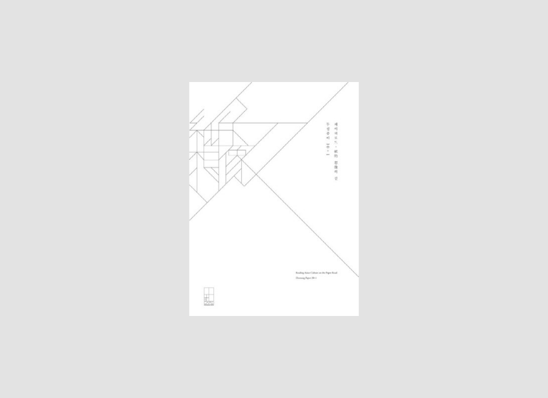
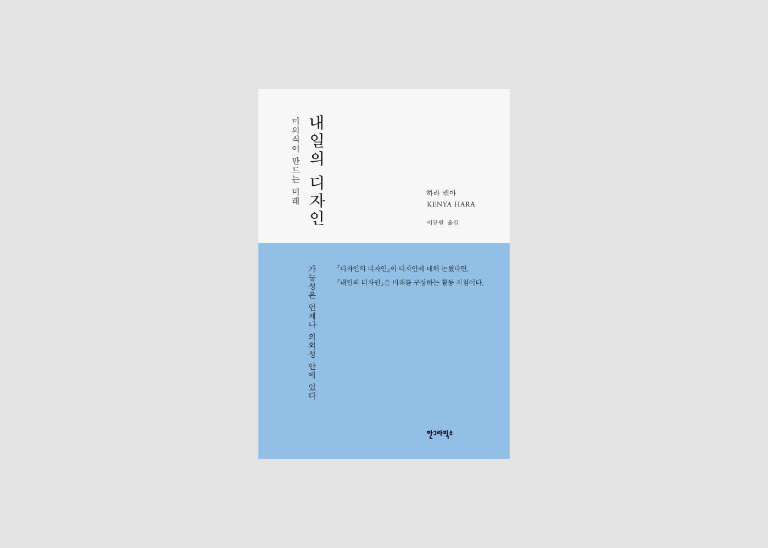
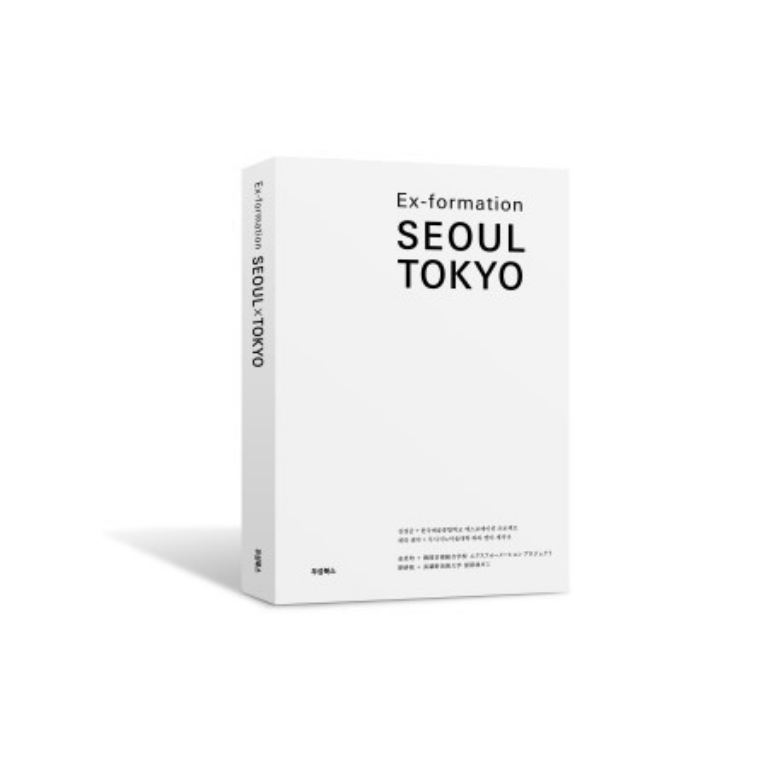
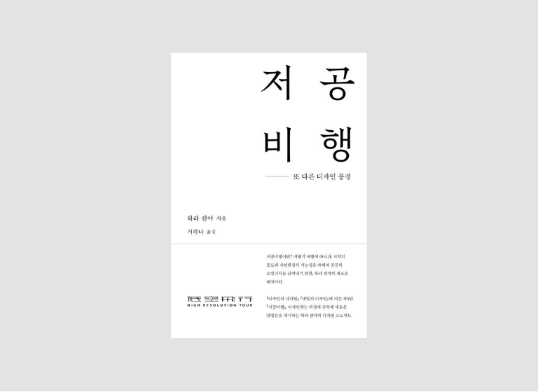
알몸 엑스포메이션
저자 하라 켄야
출판 어문학사
발행 2010.09.13
일본 디자인 세계의 거장 하라 켄야가 14인의 세미나생들과 함께 한 알몸 프로젝트『알몸 Ex-formation』. Ex-formation은 그간 하라 켄야가 지속적으로 통찰해왔던 리디자인의 일종이다. 엑스포메이션(Ex-formation) 역시 이러한 개념의 연장선상에 놓인 것으로, ‘알고 있다’라고 하는 것을 미지화시켜 그 본질을 찾아내고 그 근원을 재음미하여 새로운 개념으로 재인식한다라는 의도가 담겨 있다.
엑스포메이션 여
저자 하라 켄야
출판 어문학사
발행 2012.03.31
일본 태생의 그래픽디자이너 하라 켄야의 『엑스포메이션 여』. 일본 디자인 세계의 거장인 저자가 6년째를 맞이한 무사시노 미술대학 하라 켄야 세미나에 참여한 15명의 학생과 함께 '여(女)'를 주제로 펼친 엑스포메이션 프로젝트를 담고 있다. '여'에 대한 신선함이 넘치는 상상력을 바탕으로, 기발하고 엉뚱한 작품의 세계를 펼쳐낸다. 특히 '여'를 미지화함으로써 일본 여성들의 이상스러운 다양성을 엿보고 있다.
마카로니 구멍의 비밀
저자 하라 켄야
출판 안그라픽스
발행 2012.03.31
일상 속에 숨어있는 디자인의 열쇠를 찾아라!
『마카로니 구명의 비밀』은 한국 디자이너들의 마음을 사로잡은 《디자인의 디자인》의 저자 하라 켄야의 저서로 디자인과 일상에 대한 재치 있는 글들로 구성된 책이다. 소소한 일상 속에 숨어 있는 ‘디자인의 열쇠’를 찾는 능력이 디자이너의 자질이라고 강조하는 그는 이 책에서 디자이너로서 자신이 삶에 휴식을 주고자 했다.
이 책은 니혼케이자이신문에 2001년 11월부터 2001년 5월까지 6개월간 연재된 「디자인 나무에 오르다」를 가필해 한 권으로 책으로 엮은 것이다. 종이편지의 우아함, 피라니아의 맛, 기억의 디자인, 마카로니 구멍의 비밀, 검테이프가 전하는 메시지 등의 내용을 담고 있다. 생각을 정리하고 작업을 되돌아보는 ‘휴식’같은 글들을 만나볼 수 있다.
페이퍼로드 지적 상상의 길
저자 이어령, 하라 켄야
출판 두성북스
발행 2013.12.31
종이의 길 위에서 동아시아 작가들이 만나다
문화교류의 길『페이퍼로드 지적 상상의 길』. 이 책은 동아시아 작가들이 모여 종이에 대한, 종이를 기반으로 이루어지는 디자인에 대해 심포지엄과 전시 기록, 그리고 전시와 심포지엄에 대한 한중일 언론의 보도를 아우르고 있다. 이어령, 마쓰오카 세이고, 칸타이킁 등 한중일의 문화인들의 강연과 토론을 통해 동아시아의 끊어졌던 문화의 교류의 길을 다시금 생각해 볼 수 있을 것이다.
심포지엄 1부에선 ‘紙 - 知’ 세션에서는 이어령 선생이 ‘페이퍼로드에서 디지로그로’라는 제목으로 주제로 펼친 강연을 담았다. 2부에선 ‘像 - 想’이라는 두 번째 세션에서는 형태로써의 상과 생각으로서의 상을 주제로 토론하며 전시는 포스터전, 북디자인전, 20세기 타이포그래픽 포스터전, 종이특별전의 네 섹션으로 구성되었다. 책에는 앰블럼과 전시포스터, 초대장 등의 전시 그래픽과 전시장 안팎의 모습을 담았다. 한중일의 언론에 실린 전시 리뷰와 전시 소식도 모아 실었다.
내일의 디자인
저자 하라 켄야
출판 안그라픽스
발행 2014.03.24
우리의 미래를 그려나가는 디자인의 본질을 말하다!
미래를 구상하는 활동 지침『내일의 디자인』. 이 책은 이와나미쇼텐 출판사에서 발행하는 잡지《도쇼》에 2009년 9월부터 2년 동안 연재한 ‘욕망의 에듀케이션’을 한데 묶은 것이다. 저자 히라 켄야는 ‘일본이라는 나라의 비전’을 이야기하지만 그 너머엔 디자이너들이 사회를 위해 할 수 있는 것들이 무엇인지에 대한 메시지를 담고 있다. 현 사회가 맞이한 방향과 이 사회의 모든 것들이 디자인 대상이 될 수 있으며 디자인을 통해 미래를 바꿀 수 있다는 메시지를 전한다.
저자는 역사적 전환점에 서 있는 일본에 이 나라의 가능성과 긍지를 지켜나가기 위해 효과적인 길이 무엇인지 묻는다. 더불어 ‘이렇게 되었으면 좋겠다고 꾀하는 것이 디자인이고 그 모습을 떠올리고 구상하는 것이 디자인이다.’ 라고 말하며 디자인으로 미래를 구상하는 작업에 적극적으로 나설 수 있는 계기를 마련해준다.
엑스포메이션 서울 도쿄
저자 김경균, 하라 켄야
출판 두성북스
발행 2014.02.28
일본의 유명 디자이너 하라 켄야는 지난 10년간 무사시노 미술대학 기초디자인학과 학생들과 ‘하라 켄야 세미나’를 조직, 지금까지 ‘사만십천(四万十川)’, ‘RESORT’, ‘주름’, ‘식물’, ‘알몸’ ‘여자’ 등 다양한 주제로 꾸준히 연구를 진행해왔다. 2013년에는 한국종합예술학교 미술원 디자인과의 김경균 교수 및 학생들과 의기투합, 좀 더 나은 디자인의 미래를 위한 교류의 일환으로 공동 프로젝트를 진행하였으며, 그 테마는 ‘서울×도쿄’로 잡았다. ‘잘 알고 있다고 여기지만 사실은 잘 모르는’ 대상으로 서울과 도쿄는 더할 나위 없는 테마였으며, 이를 통해 프로젝트 참여자들은 “서울과 도쿄라는 서로 비슷한 환경의 도시에서 시간·공간·인간이라는 3간(間)을 통해 새로운 문화적 맥락을 발견하는 즐거움”을 맛보았다고 말하고 있다.
저공비행
또 다른 디자인 풍경
저자 하라 켄야
출판 안그라픽스
발행 2023.03.15
일본의 유명 디자이너 하라 켄야는 지난 10년간 무사시노 미술대학 기초디자인학과 학생들과 ‘하라 켄야 세미나’를 조직, 지금까지 ‘사만십천(四万十川)’, ‘RESORT’, ‘주름’, ‘식물’, ‘알몸’ ‘여자’ 등 다양한 주제로 꾸준히 연구를 진행해왔다. 2013년에는 한국종합예술학교 미술원 디자인과의 김경균 교수 및 학생들과 의기투합, 좀 더 나은 디자인의 미래를 위한 교류의 일환으로 공동 프로젝트를 진행하였으며, 그 테마는 ‘서울×도쿄’로 잡았다. ‘잘 알고 있다고 여기지만 사실은 잘 모르는’ 대상으로 서울과 도쿄는 더할 나위 없는 테마였으며, 이를 통해 프로젝트 참여자들은 “서울과 도쿄라는 서로 비슷한 환경의 도시에서 시간·공간·인간이라는 3간(間)을 통해 새로운 문화적 맥락을 발견하는 즐거움”을 맛보았다고 말하고 있다.
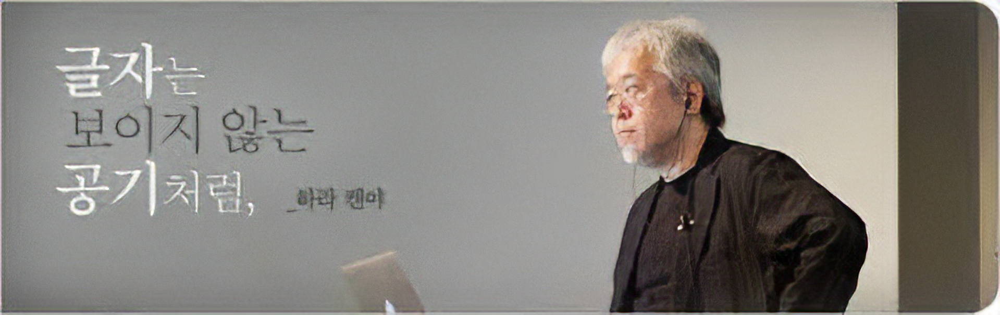